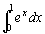

梯形及中點法則積分計算
| ) | ( | 3 | ( | ( | +/- | 1 | ) |
| yx | D | cos | sin-1 | ( | K | ÷ | ( |
| K | + | 1 | Exp | +/- | 9 | 9 | ) |
| ) | + | ( | sin | ( | ( | K | + |
| D | ) | sin-1 | 1 | ) | ) | x2 | ) |
| ÷ | 2 | yx | D | ) | - | K | - |
| 1 | + | ( | K | + | 1 | ) | STO F1 |
例題1: 利用梯形法則，子區間數目為10，計算 
按 2ndF DEL (必要) 2ndF ex 2ndF ALPHA X (變數X的函數方程) RCL F1
∫dx 0 = 1 = 10 = (顯示1.719713491)
所以=1.719713491
例題:2 利用中點法則，子區間數目為10，計算
按 2ndF DEL (必要) 1 STO D (1表示中點法則) 2ndF ex 2ndF ALPHA X (變數X的函數方程)
RCL F1∫dx 0 = 1 = 10 = (顯示1.717566086)
所以=1.717566086
相關資料:
中點法則定積分計算 (Numerical integration (Mid-point Rule))
梯形法則定積分計算 (Numerical integration (Trapezoidal Rule))
梯形法則及二項式定理 (Numerical integration (Trapezoidal Rule) and Binomial Theorem)
梯形法則及二項分佈 (Numerical integration (Trapezoidal Rule) and Binomial Distribution)